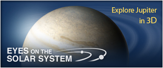

Jupiter, the most massive planet in our solar system -- with dozens of moons and an enormous magnetic field -- forms a kind of miniature solar system. Jupiter does resemble a star in composition, but it did not grow big enough to ignite. The planet's swirling cloud stripes are punctuated by massive storms such as the Great Red Spot, which has raged for hundreds of years.
Jupiter's appearance is a tapestry of beautiful colors and atmospheric features. Most visible clouds are composed of ammonia. Water vapor exists deep below and can sometimes be seen through clear spots in the clouds. The planet's "stripes" are dark belts and light zones created by strong east-west winds in Jupiter's upper atmosphere.
Featured Mission: Juno
NASA's Juno polar orbiter will study how Jupiter formed and became the dynamic world we see today. Juno will also help us to better understand the formation of our solar system and other planetary systems.
Read More About Jupiter
Just the Facts
- Metric | English | Scientific Notation
- Orbit Size (semi-major axis): 778,340,821 km
- Mean Radius: 69,911 km
- Volume: 1,431,281,810,739,360 km3
- Mass: 1,898,130,000,000,000,000,000,000,000 kg
- More Facts:

Visit Jupiter
Resources
- Missions to Jupiter
- Images of Jupiter
- Videos about Jupiter
- Exploring the Planets - Jupiter
- Galileo and Cassini at Jupiter
- NASA Lithograph on Jupiter
- NASA Planetary Photojournal - Jupiter
- National Space Science Data Center Photo Gallery - Jupiter
- StarDate - Jupiter
- Voyager: Multimedia Tour
- Voyager 2 Science Summary for Jupiter
- Welcome to the Planets
- Jupiter's Ring System
- Power to Explore: Radioisotope Power
- Compare Jupiter to other Planets/Moons
People Spotlight
"Study hard and do what you love, then it doesn't feel like work.
Carl Sagan - (1934 - 1996)
Planetary Scientist
Headlines
12 Aug 2013:
NASA's Juno is Halfway to Jupiter15 Oct 2012:
NASA's WISE Colors in Unknowns on Jupiter AsteroidsScience & Technology Features
25 Feb 2013:
50 Years of Robotic Planetary Exploration: David Kring, Senior Staff Scientist, Universities Space Research Association, Houston; Principal Investigator, LPI-JSC